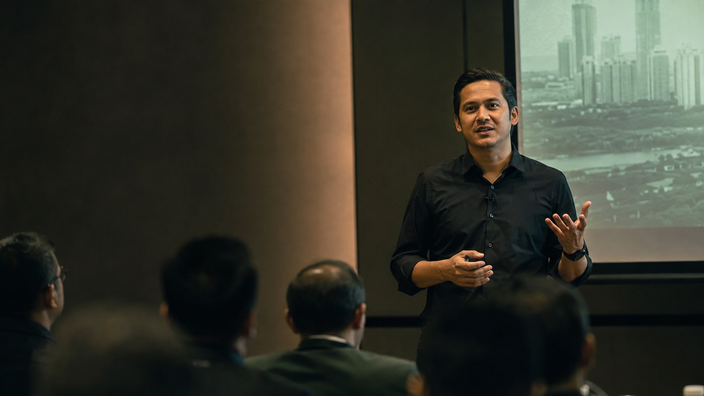
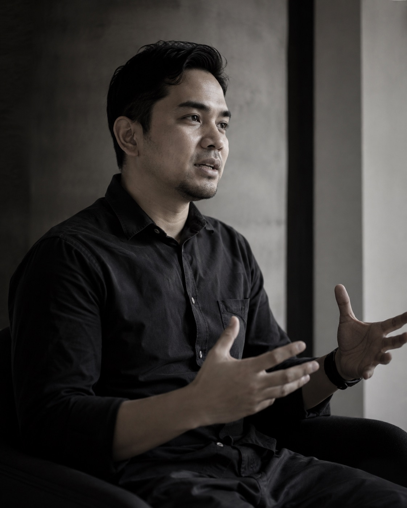

Speaking that wakes the room.
Not inspiration for its own sake. Clear frameworks, strong examples, live clarity, and a room that leaves with better questions than it entered with.

Systems humanist · Speaker · Advisor · Builder
I help leaders, teams and organisations turn AI from something exciting into something usable. My work sits where technology meets workflow, trust, decision-making and human behaviour — so the room does not just learn more, it moves differently after.
Better questions. Brighter futures.
Why people bring me in
Real rooms. Real challenges. Real progress.
Not inspiration for its own sake. Clear frameworks, strong examples, live clarity, and a room that leaves with better questions than it entered with.
When AI feels noisy, fragmented or overhyped, I help teams find the real use cases, the real blockers and the real next steps.
From tools and prompts to workflow and architecture, I care about what still works after the meeting ends.
A longer view
I did not arrive through hype.
I arrived through decades of contact.
I grew up around computers, built with terminals, worked through e-commerce, payroll, media, aviation, communities and training rooms, and learned that technology only matters when it becomes useful to people. That is the perspective I bring into every room.

“Most people collect titles.
I collected connections.”
Numbers tell a clearer story
Real experience. Real context. Real work.
30+yrs
Around computers and digital systems
275K+
Community members and audience reach
RM100M+
Payments and transaction exposure
4TB
Structured records and operational data
2+yrs
Close involvement with a major airline brand environment
RM1.5M
Monthly payroll exposure at business scale

A clearer tomorrow
If the culture is unclear, AI scales confusion. If the workflow is strong, AI compounds leverage. My job is not to force a tool into your room. My job is to make sure the room is ready to benefit from one.
View the workStart a useful conversation
The right question changes the room, the workflow and the outcome. If your organisation wants AI explained, aligned, or made genuinely useful, start the conversation.